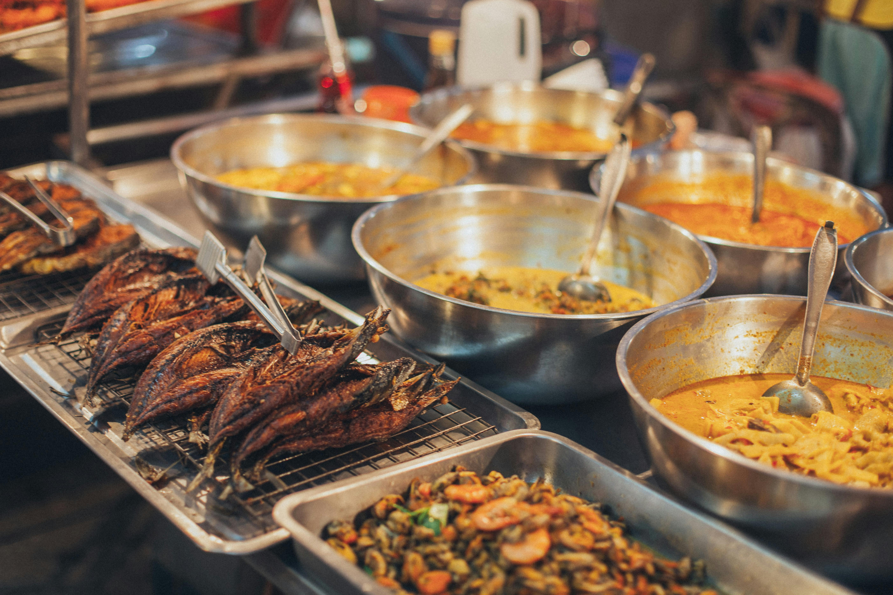
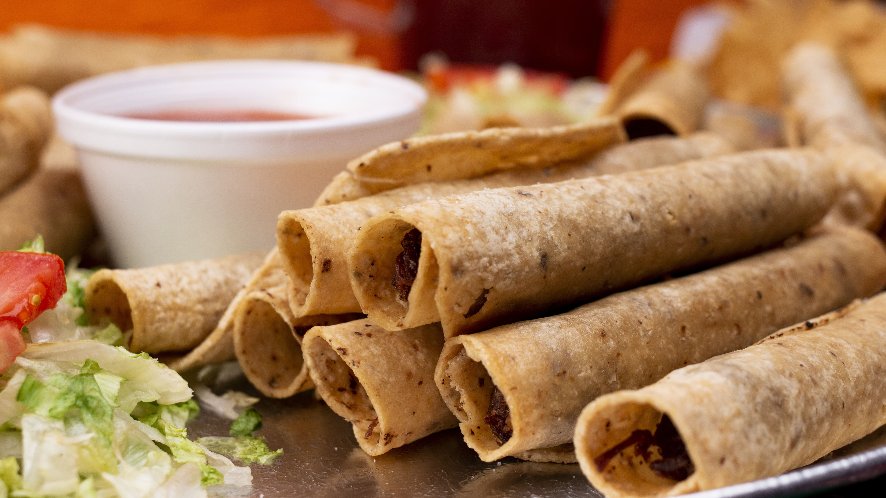

México, un país rico en gastronomía
La gastronomía mexicana es una de las más reconocidas y apreciadas a nivel mundial por su riqueza de sabores, colores y tradiciones. Se caracteriza por la combinación de ingredientes ancestrales como el maíz, el frijol y el chile, que forman la base de muchos de sus platillos típicos. A lo largo de los siglos, esta cocina ha evolucionado gracias a la mezcla de influencias indígenas y españolas, creando una identidad culinaria única y diversa. Cada región del país aporta sus propias técnicas, ingredientes y recetas, lo que convierte a la gastronomía mexicana en una expresión cultural viva que refleja la historia, la creatividad y el sentido de comunidad de su gente.
Tacos

Los tacos son, sin duda, uno de los mayores orgullos de la gastronomía mexicana. Están elaborados con tortillas suaves de maíz o trigo que envuelven un relleno jugoso y lleno de sazón, como carne asada, pollo marinado, cerdo al pastor o incluso opciones vegetarianas. Se complementan con cebolla fresca, cilantro picado, unas gotas de limón y salsas que pueden ir desde suaves hasta intensamente picantes. Cada taco combina textura, aroma y sabor en perfecta armonía. Comer un taco no es solo alimentarse, es vivir una experiencia auténtica llena de tradición.
Totopos
Los totopos son pequeños triángulos de tortilla de maíz que, al ser fritos u horneados, adquieren una textura crujiente irresistible. Son ideales para acompañar con guacamole, queso fundido, frijoles o salsas caseras. También son base de platos como los chilaquiles o nachos. Cada bocado mezcla lo crujiente con lo cremoso, despertando el apetito y haciendo difícil detenerse. Más que un simple acompañamiento, los totopos forman parte de una tradición que resalta la esencia del maíz, ingrediente fundamental en la cultura mexicana. Su versatilidad permite disfrutarlos en cualquier momento del día, ya sea como entrada, snack o incluso como protagonista en recetas más elaboradas. En cada mesa evocan ese espíritu de compartir, donde la comida se convierte en una excusa perfecta para reunirse y disfrutar.

Burritos

Los burritos son una opción abundante y reconfortante. Se preparan con una tortilla de harina que envuelve carne, frijoles, arroz, queso y vegetales. Todos los ingredientes se combinan perfectamente en cada mordida, creando una experiencia llena de sabor. Son prácticos, completos y perfectos para disfrutar en cualquier momento. Más que un plato, el burrito representa la fusión de ingredientes que caracteriza a la cocina del norte de México, donde cada región aporta su propio toque y sazón. Su formato enrollado no solo lo hace fácil de comer, sino también ideal para quienes buscan una comida sustanciosa sin complicaciones. Además, su versatilidad permite adaptarlo a todos los gustos: desde versiones tradicionales hasta combinaciones modernas con distintos tipos de proteínas, salsas y especias. Ya sea en un restaurante, en la calle o en una reunión informal, el burrito siempre destaca como una opción que satisface y deja con ganas de repetir.